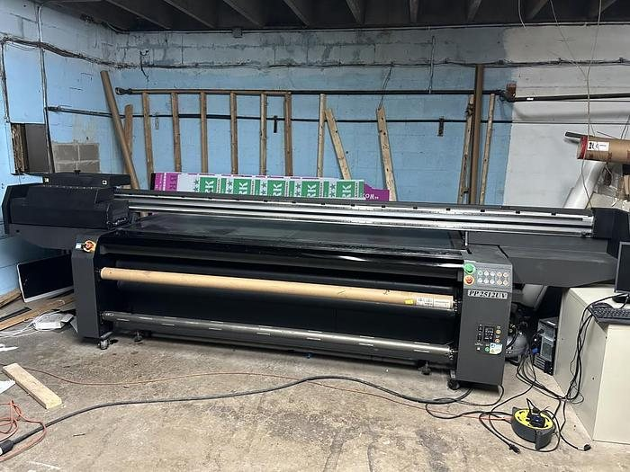
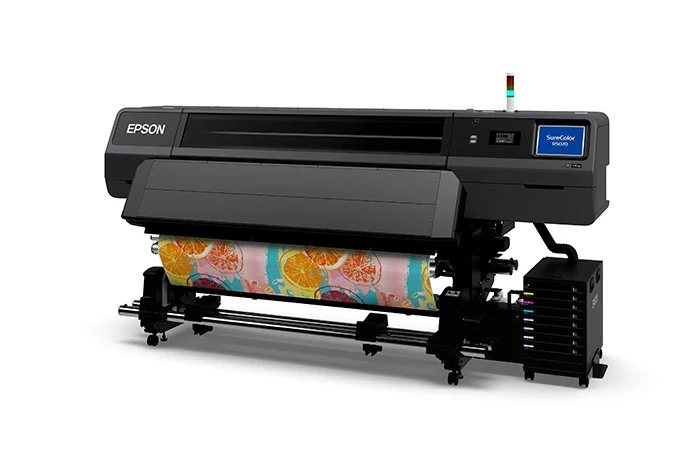
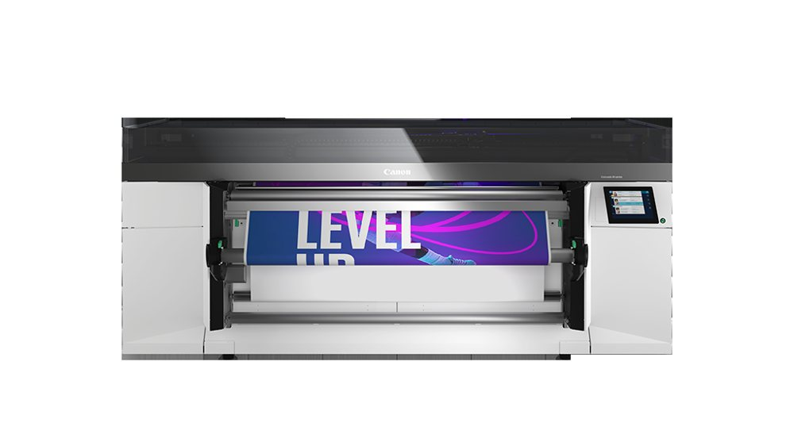
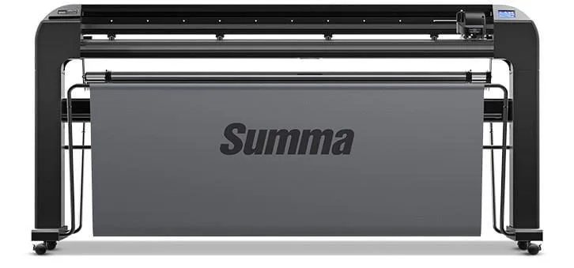
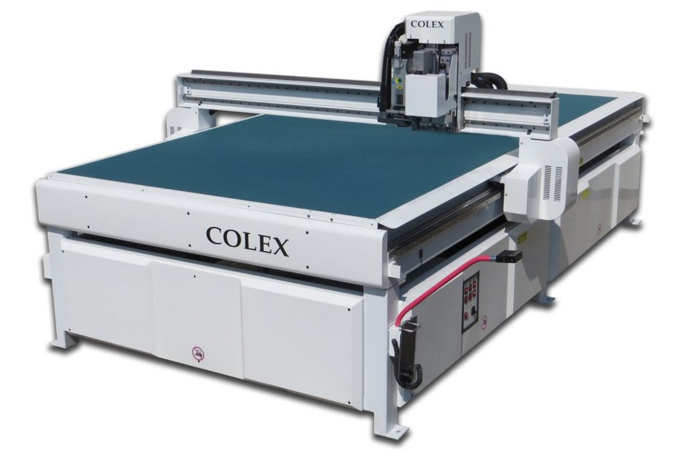

Capacitaciones en este departamento
 Muy pronto
Muy pronto
Cómo Corre un Trabajo de Impresión
Enviar el archivo, cargar el material y ver salir la impresión: la rutina de impresión de todos los días.
 Muy pronto
Muy pronto
Corte y Descarte de Vinil
Cortes kiss-cut y FlexCut en el plotter, y luego el descarte y el tape: cómo el vinil cortado queda listo para usar.
Cómo Encontrar los Archivos de Impresión
Imprime solo desde 03_Print_Ready en la carpeta de la orden en Drive (SD-ACCOUNTS). El sufijo te dice el archivo: _PRINT imprime, _CUT corta. Si no está en 03_Print_Ready, no lo imprimas. SD-Active es solo archivo.
 Muy pronto
Muy pronto
La Cola de Impresión en EVO
Los trabajos de impresión salen del tablero en EVO. Cuando un trabajo está impreso, actualiza el estado de la partida para que el siguiente equipo vea que está listo.
Máquinas y Equipos

Impresora de Gran FormatoFlora PP2512UV
Impresión directa sobre materiales planos rígidos.
Abrir página →
Impresora de Gran FormatoEpson SureColor R5070
Impresión directa sobre materiales en rollo.
Abrir página →
Impresora de Gran FormatoCanon M-Series
Impresión directa sobre materiales en rollo.
Abrir página →
Cortadora / Grabadora / PlotterSumma S2 Class 160 T Plotter
Corte de vinil dejando el papel respaldo.
Abrir página →
Cortadora / Grabadora / PlotterColex FBCJ510
Máquina de corte y grabado usada solo en materiales planos rígidos.
Abrir página →